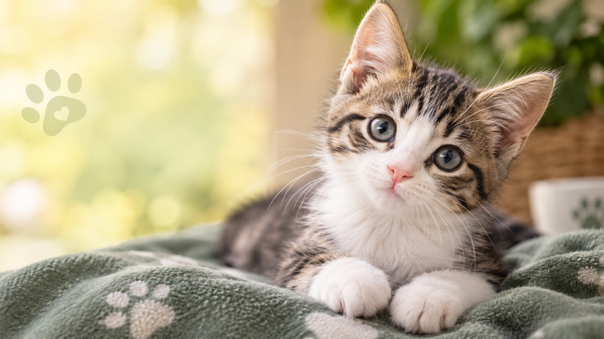
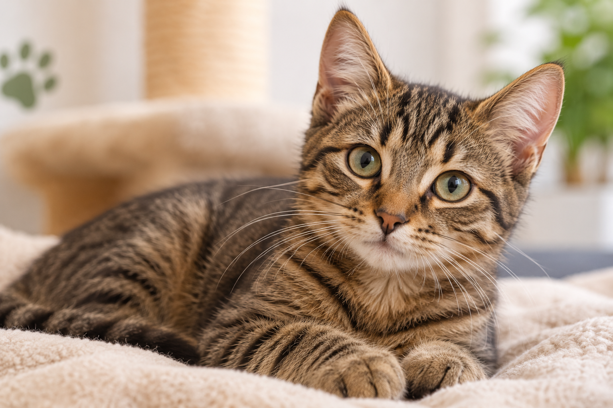
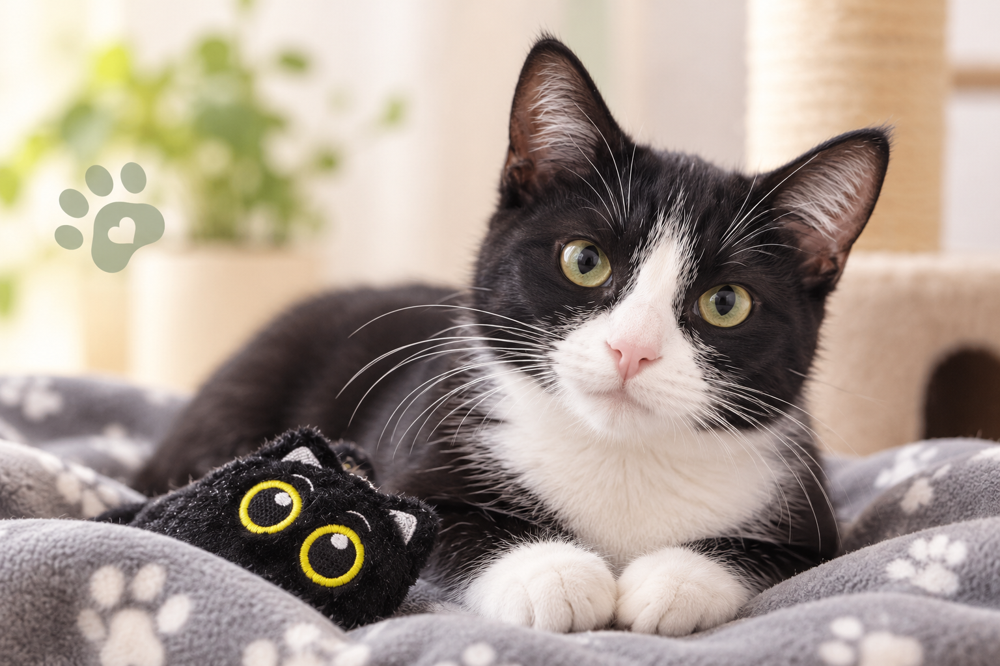

1. Conócela
Escríbenos para saber más sobre ellos y conversar sobre lo que necesita.
 Huellas de Amor
Huellas de Amor
Conoce a quienes esperan una familia y anímate a cambiar una vida.
Escríbenos para saber más sobre ellos y conversar sobre lo que necesita.
Cuéntanos sobre tu hogar y resuelve cualquier duda antes de dar el paso.
Si ambos están listos, coordinamos cómo darle la bienvenida a tu nueva compañera.


